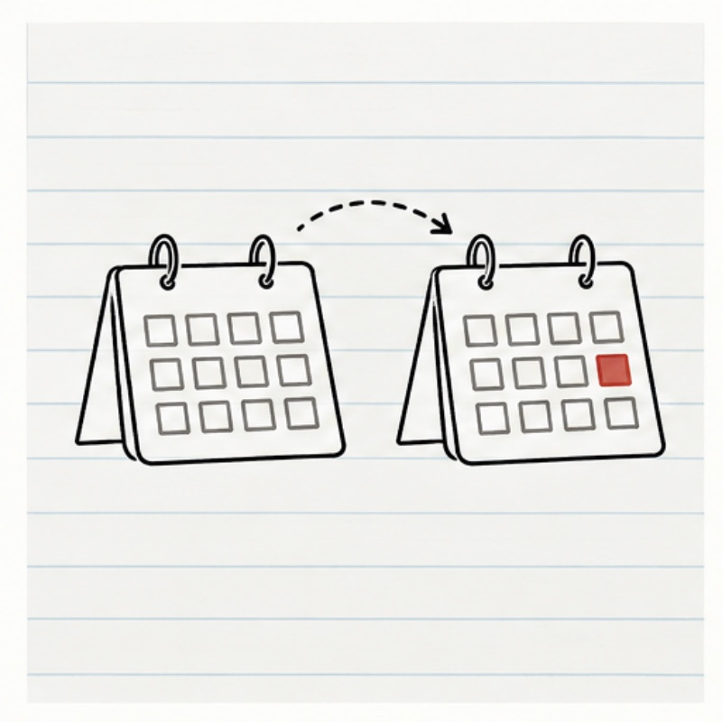

01 · A date slips
“Staging slipped to Saturday. Who needs to know before Sarah's spend locks Tuesday at 5?”
Sarah is asked: her announcement needs ten calendar days after staging and Sat Oct 10 leaves five. Marco is informed: his Acme condition still holds by one business day. Nadia decides; the forecast is on record either way.
CoordinatedAPP
Staging may slip: Thu Oct 1 → Sat Oct 10
Maya's forecast, not yet a change. Nadia decides.
Your announcement (Thu Oct 15) needs ten calendar days after staging; Sat Oct 10 leaves five.
Your campaign spend locks Tue Oct 6, 5:00 PM.
- Launch plan ¶7 · ten days after staging
- Delivery notes, line 11 · Acme rollout Thu Oct 15
- Spend lock · Tue Oct 6, 5:00 PM
Decided Tue Oct 6, 9:05 AM · 1 asked, answered · 1 informed · 0 pending · terms v2
What stays on record: the forecast, Nadia's decision, Sarah's answer, Marco's unchanged condition, and the source lines that connected them.